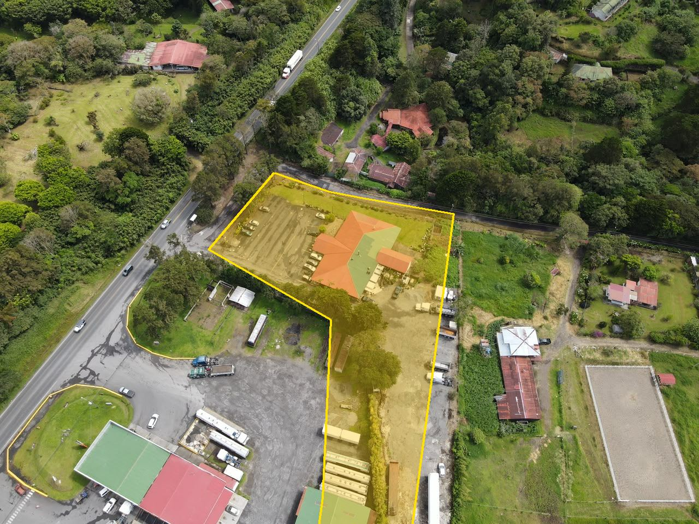
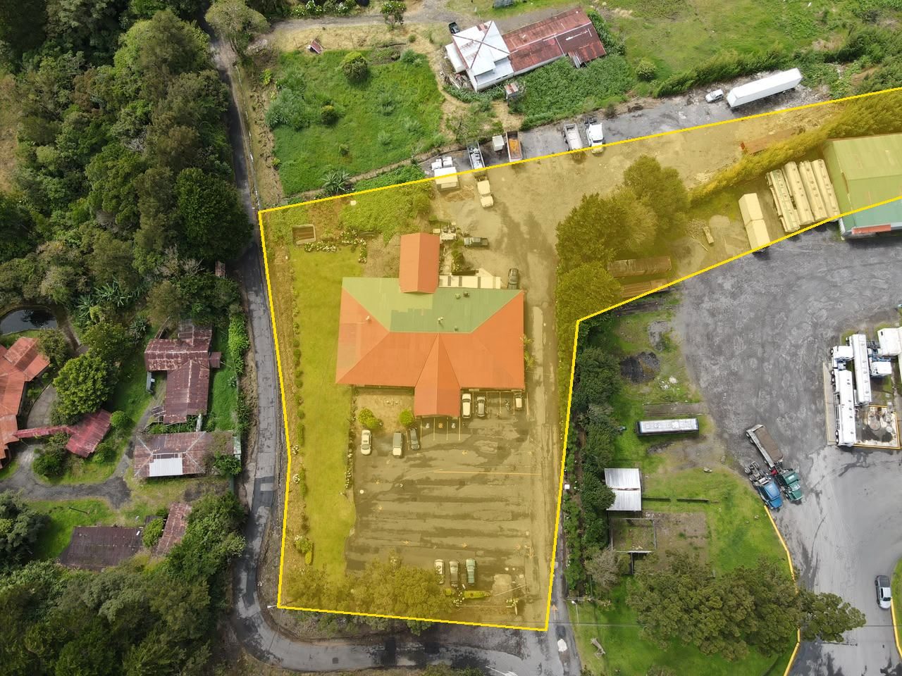
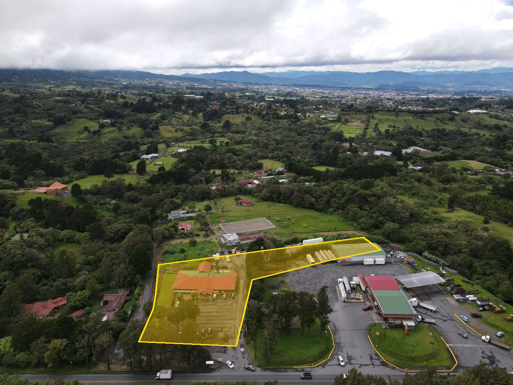
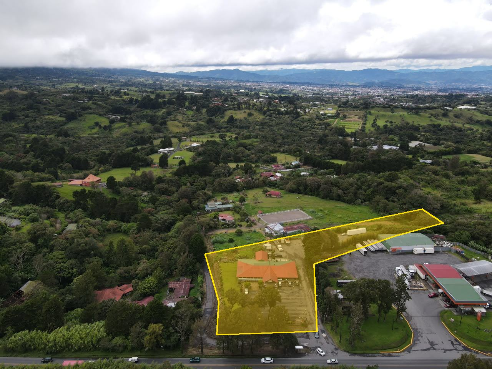
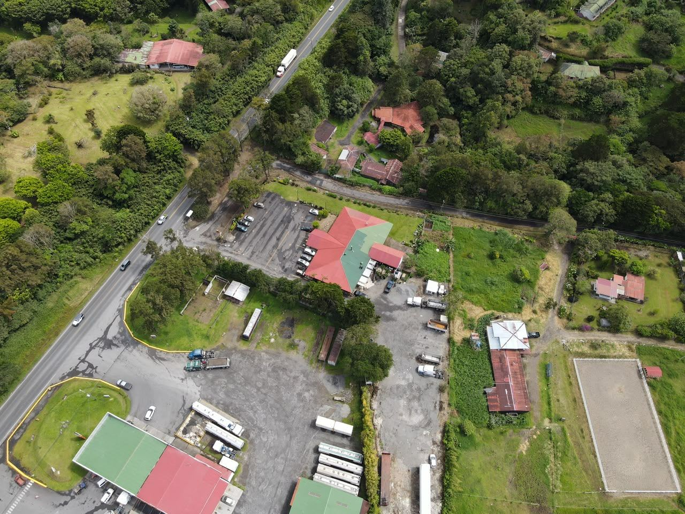
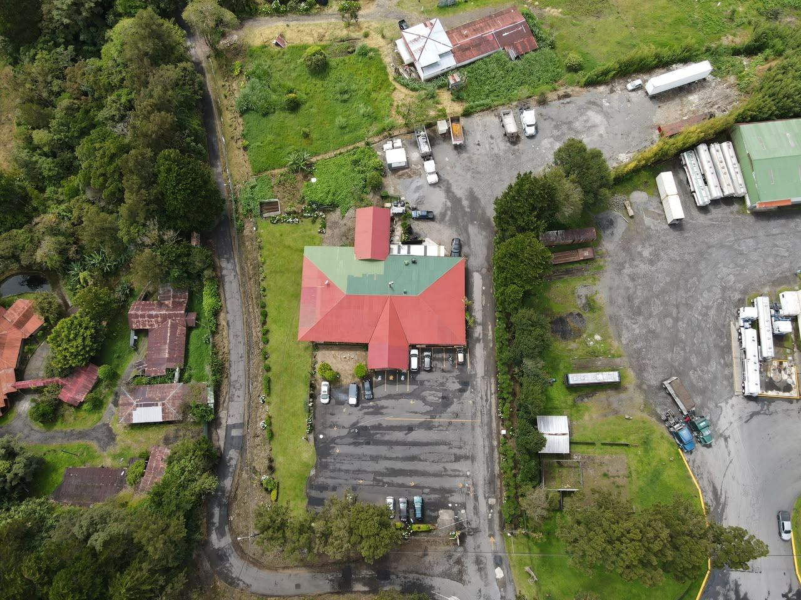
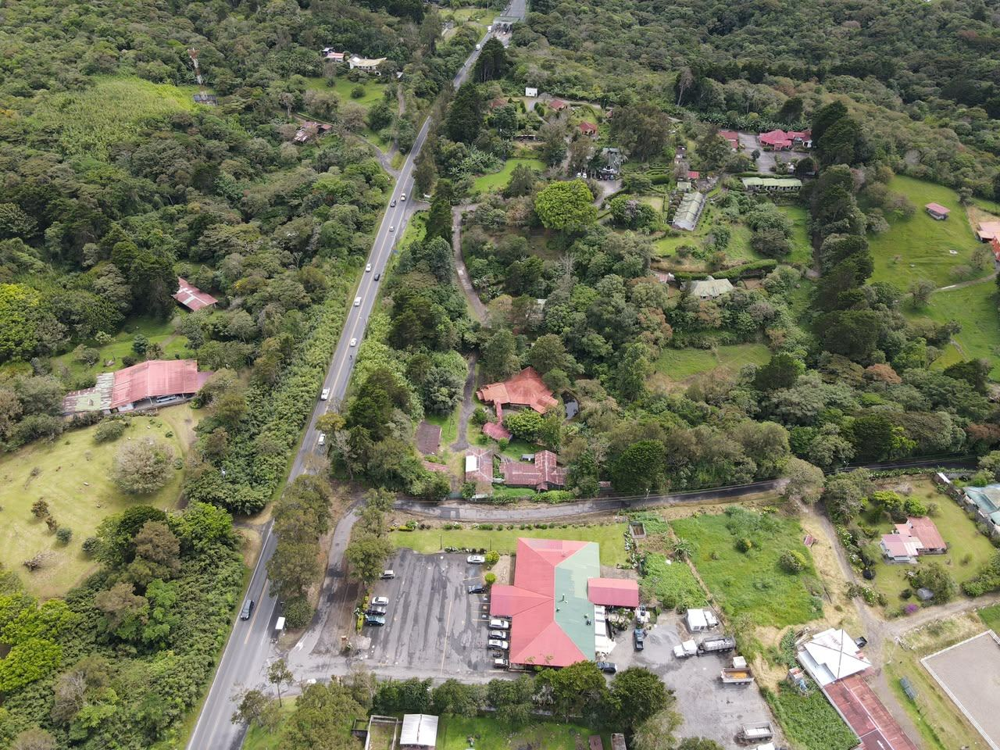
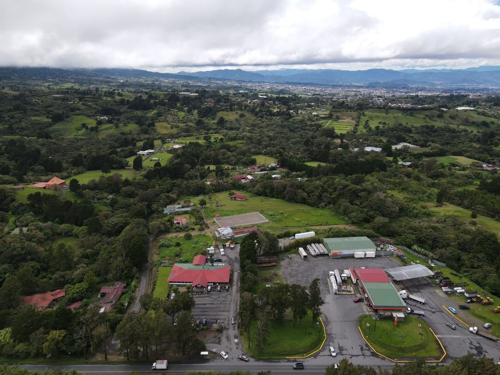
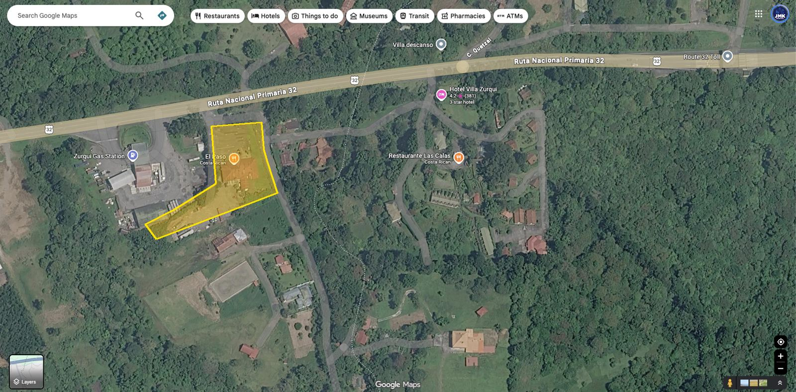
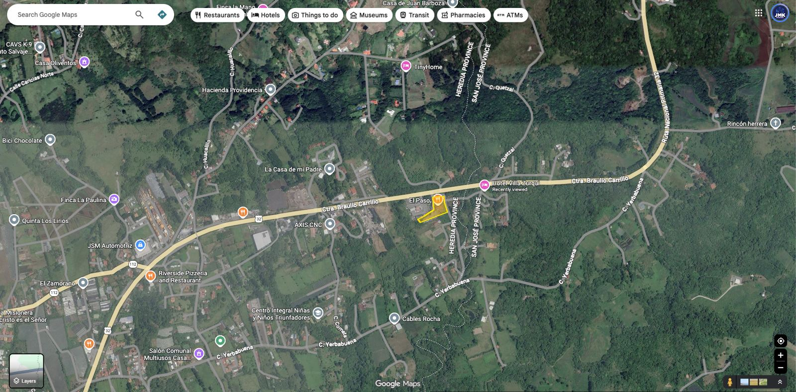

Propiedad # 10586893
Venta
Venta

Santa Elena, Distrito 2° San José, Cantón 6° San Isidro, Heredia
¡Excelente oportunidad de inversión comercial e industrial en un punto estratégico! Se vende el reconocido Restaurante El Paso, ubicado sobre la ruta principal Carretera Braulio Carrillo (Ruta 32). Con un amplio terreno y una ubicación de alto tránsito vehicular, esta propiedad ofrece un potencial increíble tanto para continuar el negocio gastronómico como para desarrollos industriales gracias a su excelente uso de suelo.









Teléfono y WhatsApp: +506 6019-0789
Ver ficha en realestatejmk.com